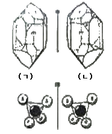
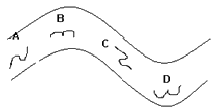
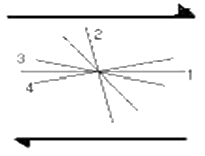
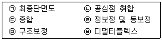
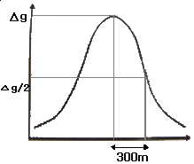
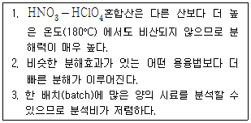
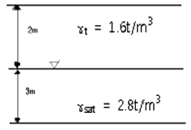
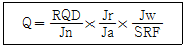

응용지질기사 (2009-05-10 기출문제)
1과목: 암석학 및 광물학
1. 라브라도라이트 사장석 표면에서 관찰되는 라브라도리슨스(labradorescence)효과의 원인은?
- 원자 층에서 일어나는 빛의 회절효과
- 알바이트 사장석과의 경계에서 일어나는 빛의 간섭효과
- 신선한 광물표면에서 일어나는 빛의 반사효과
- 취편쌍정 경계에서 일어나는 빛의 간섭효과
(정답률: 89%)

2. 바이스 기호(Weiss symbol)로 {4a : 2b : C}로 나타나는 면의 밀러 지수(Miller index)는?
- ( 4 2 1 )
- ( 1 2 4 )
- ( 1/4 1/2 1/1 )
- (1/1 1/2 1/4)
(정답률: 77%)
3. 다음 그림과 같은 결정형의 관계를 무엇이라 하는가?

- 정형
- 부형
- 이극상
- 대장상
(정답률: 67%)
4. 광물의 발색소(chromophore)와 색깔이 잘못 연결된 것은?
- Cr3+ - 녹색
- Cu2+ - 청색
- Fe3+ - 황색
- Mn2+ - 백색
(정답률: 42%)
5. 다음 중 희토류 금속을 함유하고 있는 광물은?
- 바스트네사이트
- 회중석
- 인회석
- 베수비아나이트
(정답률: 37%)
6. 광물 표면의 성질이 물에 잘 젖지 않는 소수성 광물은?
- 석영
- 다이아몬드
- 방해석
- 정장석
(정답률: 75%)
7. 다음 중 부(Negative)의 일축성 결정의 굴절률을 표시한 것은? (단, Nw : 상광선에 대한 굴절률, Nε : 이상 광선에 대한 굴절률)
- Nw ＞ Nε
- Nw ＜ Nε
- Nw = Nε
- Nw ≧ Nε
(정답률: 67%)
8. 다음 중 결정면 상에 조선(striation)이 발달되어 있는 특징을 흔히 관찰할 수 있는 광물은?
- 백운모
- 적철석
- 황철석
- 감람석
(정답률: 27%)
9. 어떤 광물이 후기의 다른 광물에 의하여 덮어씌워진 후, 처음 광물이 용해되면 공허한 결정형태를 무엇이라고 하는가?
- 피복 가상
- 충전 가상
- 교대성 가상
- 다형성 가상
(정답률: 알수없음)
10. 규산염 광물은 SiO4 사면체를 기본 구조로 하여 이 사면체들의 산소공유 정도에 따라 구조가 결정된다. 규산염 광물의 구조와 대표적인 광물에 대한 설명 중 틀린 것은?
- 독립사면체 구조는 SiO4 사면체가 독립적으로 존재하는 것으로 Si : O = 1 : 4 이다. 대표적인 광물로는 저어콘과 감람석이 있다.
- 복사면체 구조는 2개의 SiO4 사면체가 하나의 산소를 공유한 것으로 Si : O = 2 : 7 이다. 대표적인 광물은 메릴라이트이다.
- 환상 구조는 SiO4 사면체가 2개의 산소를 공유하면서 하나의 고리를 형성한 것으로 Si : O = 1 : 3 이다. 대표적인 광물은 녹니석이다.
- 복쇄상 구조는 2개의 단쇄상 구조가 연결된 것으로 Si : O = 4 : 11 이다. 대표적인 광물로는 투각섬석이 있다.
(정답률: 57%)
11. 저탁류에 의해 형성되는 저탁암(turbidite)의 특징적인 퇴적구조는?
- 사층리
- 점이층리
- 연흔
- 건열
(정답률: 89%)
12. 다음 변성광물 중 접촉 변성암에서는 거의 나타나지 않는 광물은?
- 홍주석
- 규회석
- 십자석
- 근청석
(정답률: 42%)
13. 현정질 화성암의 구성 광물이 대, 중, 소의 다양한크기의 입자로 구성되어 있는 조직을 무엇이라 하는가?
- 구상 조직
- 세리에이트 조직
- 반정질 조직
- 구과상 조직
(정답률: 67%)
14. 쇄설성 퇴적암을 역암, 사암, 실트스톤, 셰일로 구분하는 기준은?
- 입자 크기
- 광물 조성
- 화학 성분
- 공극률
(정답률: 93%)
15. 변성암의 특정적인 구조와 엽리의 발달에 가장 관련이 있는 것은?
- 온도
- 압력
- 화학 성분
- 밀도
(정답률: 87%)
16. 다음 중 바로비안 변성상 계열의 변성상 변화를 나타내는 것은?
- 불석상 (→) 조장석-녹염석 혼펠스상 (→) 각섬석 혼펠스상 (→) 희석 혼펠스상 (→) 세니디나이트상
- 불석상 (→) 프레나이트-펨펠리아이트상 (→) 녹색편암상 (→) 각섬암상 (→) 백립암상
- 불석상 (→) 프레나이트-펨펠리아이트상 (→) 청색편암상 (→) 녹색편암상 (→) 각섬암상
- 불석상 (→) 프레나이트-펨펠리아이트상 (→) 청색편암상 (→) 에클로자이트상
(정답률: 60%)
17. 아르코스(arkose) 사암의 주성분 광물이 되는 조합은?
- 석영, 백운모
- 석영, 장석
- 방해석, 장석
- 방해석, 백운모
(정답률: 91%)
18. 어느 화성암을 관찰하였더니 조립질의 완정질이고 등립질이며, 주성분 광물은 Ca사장석과 휘석으로 구성되어 있었다. 이 관찰한 내용에 해당하는 암석은?
- 반려암
- 현무암
- 유문암
- 안산암
(정답률: 72%)
19. 다음 중 록키 산맥과 안데스 산맥을 포함하는 환태평양의 “불의 고리(ring of fire)”를 이루는 주요 암석은?
- 현무암
- 규암
- 대리암
- 안산암
(정답률: 80%)
20. 판상 구조를 보이는 주위 암석속에 평행하게 관입한 판상의 화성암체는?
- 암상(sill)
- 암경(neck)
- 암주(stock)
- 저반(batholith)
(정답률: 89%)
2과목: 구조지질학
21. 다음 중 지각 운동과 관련된 지진이 아닌 것은?
- 단층 지진
- 베니오프대 지진
- 화산 지진
- 함락 지진
(정답률: 50%)
22. 습곡구조에 발달하는 층간 소습곡(intrafolial fold) 구조는 큰 규모의 습곡구조를 유추하는데 도움이 된다. 아래 그림에서 각 위치에서 적절하지 못한 소습곡 구조는?

- A
- B
- C
- D
(정답률: 64%)
23. 다음 중 석회암의 풍화와 침식에 의해 발달하는 지형의 이름은?
- 사행천
- 사주
- 카르스트
- U자곡
(정답률: 69%)
24. 하천의 근원지에서부터 하구까지 여행을 하게 되면 하도를 따라 다음과 같은 변화를 관찰할 수 있다. 다음 중 틀린 것은?
- 유량이 증가한다.
- 하도의 단면적이 증가한다.
- 유속이 감소한다.
- 구배가 감소한다.
(정답률: 67%)
25. 다음의 지형 중에서 변형작용의 기원이 다른 하나는?
- 알프스 산맥
- 아프리카 대열곡
- 홍해
- 동태평양 산맥
(정답률: 알수없음)
26. 화석 밀집부의 산상에 대한 용어로서 화석 밀집부가 동상이나 렌즈상이며 그 대부분이 정착성의 생물로 되어 있는 것은 무엇인가?
- 바이오험(Bioherm)
- 큐폴라(Cupola)
- 덱케(Decke)
- 바이오스트롬(Biostrome)
(정답률: 57%)
27. 대륙이 한 덩어리의 초대륙(Pangaea)에서 분리되어 현재와 같은 모양의 대륙으로 분포되었다는 대륙표이설의 증거와 관계가 먼 것은?
- 히말라야산맥과 록키산맥은 퇴적암으로 되어있다.
- 남극대륙, 호주, 남아프리카에는 같은 식물 화석이 나타난다.
- 인도, 아프리카, 호주는 대부분 현재 열대 내지 온대 지방이지만 고생대말에 빙하작용이 있었다.
- 열대지방에서 생성되는 석탄층이 남극대륙에서 발견된다.
(정답률: 85%)
28. 침식윤회에서 노년기 이후 최종적으로 형성되는 평탄한 침식 면을 무엇이라 하는가?
- 구릉
- 단애
- 준평원
- 완평원
(정답률: 77%)
29. 단층비탈향사(fault-ramp syncline), 단층굴곡배사(fault-bend anticline),회전배사(roll-over anticline) 등의 지질구조가 형성되는 곳은?
- 정단층계
- 스러스트단층계
- 주향이동단층계
- 변환단층계
(정답률: 67%)
30. 단층(fault)과 절리(joint)를 구분하는 가장 큰 기준이 되는 것은?
- 변위
- 두께
- 연장성
- 생성시기
(정답률: 86%)
31. 다음 그림은 우수향 단순 전단 운동에 의해 발달할 수 있는 지질 구조의 방향을 표시한 것이다. 잘못 짝지어진 것은 무엇인가?

- ① - 우수향 주향이동단층
- ② - 역단층
- ③ - 정단층
- ④ - 좌수향 주향이동단층
(정답률: 75%)
32. 전 세계적으로 지구역사상 최대규모의 생물 멸종 현상이 일어난 시기는?
- 고생대 말
- 중생대 말
- 신생대 말
- 선캄브리아누대 말
(정답률: 90%)
33. 대륙지각의 평균 밀도가 2.5 g/cm3 일 때 대륙지각 하부인 30km 깊이에서의 정암압은? (단, 중력가속도 g = 9.8 m/sec2 임)
- 73.5 Mpa
- 735 Mpa
- 76.5 Mpa
- 765 Mpa
(정답률: 50%)
34. 지층의 경사가 급한 곳에서 형성되는 양 사면이 가파르고 좁은 산릉은?
- 에스카프먼트(escarpment)
- 호그백(hogback)
- 지루와 지구(horst & garben)
- 단층애(fault scarp)
(정답률: 75%)
35. 다음 단층암석(fault rock) 중 가장 높은 압력 조건에서 생성되는 것은?
- 단층각력암(fault breccia)
- 압쇄암(mylonite)
- 원압쇄암(protomylonite)
- 초파쇄암(ultracataclasite)
(정답률: 75%)
36. 대동층군의 퇴적 이후에 발생한 지질학적 사건은?
- 불국사 화강암의 관입
- 평안누층군의 퇴적
- 조선누층군의 퇴적
- 송림조산운동
(정답률: 59%)
37. 다음 중 추가령열곡이 해당하는 지형은 무엇인가?
- 단층곡
- 배사곡
- 메사
- 사행천
(정답률: 75%)
38. 수계발달 특성 중 기반암의 지질구조에 의한 것이 아닌 것은?
- 평행 수계(parallel drainage)
- 격자상 수계(trellis drainage)
- 장방형 수계(rectangular drainage)
- 수지상 수계(dendritic drainage)
(정답률: 89%)
39. 절대연령측정법 중 홀로세에 발생한 단층운동의 최후 운동시기를 한정하는데 가장 적당한 것은?
- 우라늄/납 방법
- 탄소 동위원소 방법
- 칼륨-아르곤 방법
- 루비듐/스트론튬 방법
(정답률: 63%)
40. 지진이 발생하고 나서 10초 후에 P파가 도착하였으며, 그 7초 후에 S파가 도착하였다. P파 속도는 S파 속도의 몇 배인가?
- 0.7배
- 1.2배
- 1.5배
- 1.7배
(정답률: 84%)
3과목: 탐사공학
41. 실제로 존재하는 층이 굴절법 탄성파 탐사로 탐지되지 않을 때 그 층을 무엇이라 하는가?
- 팬텀층(phantom layer)
- 숨은층(hidden layer)
- 굴절층(refracted layer)
- 수평층(horizontal layer)
(정답률: 83%)
42. 유정(油井) 탐사에 중요한 것으로 사암 등과 같은 투수성 지층을 판별하고, 이들과 셰일층과 경계를 파악하고자 할 때 주로 사용되는 검층은?
- 전기비저항 검층
- 전자유도 검층
- 유도분극 검층
- 자연전위 검층
(정답률: 78%)
43. 자연 잔류 자기와 현재의 자기장에 의한 유도 자기와의 비를 무엇이라고 하나?
- Eotvos 비
- Konigsberger 비
- Moho 비
- Poisson 비
(정답률: 75%)
44. 탄성파 야외 탐사 자료를 각 채널별로 순차적으로 정리하여 연속적인 탄성파 트레이스로 바꾸어 주는 작업 과정을 무엇이라고 하는가?
- 편집
- 디콘볼루션
- 디멀티플렉스
- 이득회수
(정답률: 57%)
45. 탄성파 탐사 자료를 통하여 탄화수소 가스층의 부존 가능성을 직접 예측하는 증거로 볼 수 없는 것은?
- 명점(Bright Spot)
- 극성 역전(Polarity Reversal)
- 타임 새그(Time Sag)
- 보타이(Bow Tie)
(정답률: 70%)
46. 다음 잔류자기 중 안정성이 높아 암석의 연대 측정 등에 가장 적합한 것은?
- 열잔류자기
- 등온잔류자기
- 화학잔류자기
- 퇴적잔류자기
(정답률: 75%)
47. 반사법 탄성파 탐사자료의 처리 계통 순서를 바르게 배열한 것은?

- ㉡ - ㉥ - ㉢ - ㉤ - ㉣ - ㉠
- ㉡ - ㉢ - ㉥ - ㉣ - ㉤ - ㉠
- ㉥ - ㉡ - ㉣ - ㉢ - ㉤ - ㉠
- ㉥ - ㉡ - ㉢ - ㉤ - ㉣ - ㉠
(정답률: 50%)
48. 매질의 음향 임피던스(acoustic impedance)와 관련이 있는 두 가지 매질의 성질은?
- 탄성파 속도, 밀도
- 대자율, 유전율
- 탄성파 속도, 유전율
- 전기전도도, 밀도
(정답률: 72%)
49. 토양층 중 B층에 대한 설명으로 틀린 것은?
- 기후와 식생의 영향을 직접받는 층으로 상부에 유기물층이 존재한다. 적갈색, 황갈색, 암회색 등의 색을 띤다.
- 주로 철산화물이나 점토광물이 집적된 층이다
- 미량원소들이 농축되는 경우가 많으므로 지구화학탐사의 대상층이 된다.
- 적갈색, 황갈색, 암회색 등의 색을 띤다.
(정답률: 82%)
50. 암종에 따른 전기비저항에 관한 설명 중 맞는 것은?
- 일반적으로 퇴적암의 전기비저항은 화성암이나 변성암에 비교하여 더 높다.
- 전기비저항은 같은 암종에서도 수분 함량이 높을수록 높은 값을 보인다.
- 여러 가지 암석 및 광물의 물리적인 성질 중에서도 전기비저항은 그 변화의 폭이 가장 작다.
- 전기비저항의 단위는 Ω-m를 쓰며, 전기 전도도의 역수이다.
(정답률: 59%)
51. 100MHz 주파수의 안테나를 사용하여 상대 유전율이 9인 석회암지역에서 지하투과 레이다 (GPR)탐사를 한다고 할 때 레이다파의 파장은 얼마인가?
- 0.11m
- 0.33m
- 1.00m
- 3.00m
(정답률: 알수없음)
52. 1층 및 2층의 탄성파 전파속도가 각각 600m/sec, 1500m/sec이고, 1층의 심도가 20m인 수평 2층 구조에서 폭원으로부터 80m 떨어진 지점에 굴절파의 도착시간은?
- 0.152초
- 0.135초
- 0.114초
- 0.102초
(정답률: 20%)
53. 지하에서 자연적으로 발생되는 전위 중 전기역학적전위(electrokinetic potential)로 자연전위 검츰이 시추이수가 공극성 지층안으로 침투할 때 관측되는 전위는?
- 광화 전위
- 네르스트 전위
- 유동 전위
- 확산 전위
(정답률: 69%)
54. 수평적인 층서구조(layered earth)를 가진 지하매질에 대해 전기비저항탐사를 수행할 때 수직 분해능(vertical resolution)이 가장 높은 전극 배열법은?
- 웨너(Wenner) 배열
- 쌍극자(dipole-dipole) 배열
- 슐럼버저(Schlumberger) 배열
- 정사각형(square) 배열
(정답률: 28%)
55. 중력탐사를 시행하여 다음 그림과 같은 중력이상 그래프를 얻었다. 중력이상 최대값의 반이 되는 지점은 최대값인 곳으로부터 300m 떨어진 지점이다. 지하의 광체가 균질의 구형체라고 가정하면 구형체 중심의 심도는 얼마인가?

- 150m
- 200m
- 300m
- 400m
(정답률: 50%)
56. 광체의 일부가 지표면에 노두로서 노출되었거나 시추공에 의해 착맥되었을 때 전류전극 중 하나를 광체에 접촉시키고, 다른 하나를 먼 거리에 접지시킨 뒤, 전위전극들을 지표면상에서나 시추공내에서 이동시키면서 전위분포를 측정하는 탐사방법은?
- 자연전위법
- 유도분극법
- 인공분극법
- 지전류법
(정답률: 8%)
57. 다음 중 강자성(ferromagnetic) 물질이 아닌 것은?
- 자철석
- 코발트
- 니켈
- 철
(정답률: 57%)
58. 다음 중 그라운드롤(ground roll)과 가장 관계가 있는 것은?
- 표면파
- 직접파
- 다중반사파
- 음파
(정답률: 73%)
59. 지구화학탐사에서는 토양, 암석, 퇴적물 및 기타 다른 물질로부터 미량성분을 추출하는데 여러 가지 방법들을 적용하고 있다. 다음은 어떠한 추출방법에 대한 설명인가?

- 약산추출
- 부분추출
- 강산추출
- 휘발법
(정답률: 84%)
60. 다음 중 지구화학적 1차 환경에서 1차 분산(Primary dispersion)에 가장 영향을 미치는 것은?
- 암석
- 토양
- 공기
- 식물
(정답률: 80%)
4과목: 지질공학
61. 다음 중 화강암 등 경암으로 구성된 암반 사면에서 가장 발생하기 어려운 사면 파괴형태는?
- 전도파괴
- 평면파괴
- 원호파괴
- 쐐기파괴
(정답률: 38%)
62. 점토 지층에서 실시된 표준관입시험 결과 얻어진 N값이 12였다면, 이 점토층의 일축압축강도는 얼마로 추정할 수 있는가?
- 1.0 kgf/cm2
- 1.5 kgf/cm2
- 2.0 kgf/cm2
- 2.5 kgf/cm2
(정답률: 70%)
63. 다음 중 현탁액형 그라우트(particulate grout)가 아닌 것은?
- 시멘트
- 벤토나이트
- 아스팔트
- 아크릴아미드
(정답률: 36%)
64. 연암의 공학적 특성으로 적당하지 않은 것은?
- 크리프 특성이 거의 나타나지 않는다.
- 물을 흡수하면 강도 저하가 많이 발생한다.
- 물을 흡수하면 팽창한다.
- 건습과정을 반복 적용하면 쉽게 부서진다.
(정답률: 85%)
65. 다음 그림에서 지하 5m 지점에서의 전응력과 유효응력 값을 순서대로 구하면 각각 얼마인가?

- 11.6 t/m2 , 8.6 t/m2
- 8.6 t/m2 , 11.6 t/m2
- 11.6 t/m2 , 6.8 t/m2
- 6.8 t/m2 , 11.6 t/m2
(정답률: 40%)
66. 터널공사시 암반조건에 대한 공학적 성질을 제시해주는 값으로 아래와 같은 Q값을 사용한다. 아래 식에서(RQD/Jn)는 암반의 어떤 성질을 반영해주는가?

- 풍화상태
- 암괴의 크기
- 암괴간의 전단강도
- 작용응력
(정답률: 91%)
67. 흙의 통일 분류법에서 소성이 낮은 유기질 실트 또는 유기질 실트 점토 나타내는 기호는?
- GW
- CH
- OL
- CL
(정답률: 73%)
68. 사면의 붕괴를 평가할 때 중요한 요소 중 하나는 절리면 조도(roughness)이다. 다음 중 절리면 조도에 의해서 가장 큰 영향을 받는 현장암반의 성질은 어떤 것인가?
- 절리면 압축강도
- 절리면 인장강도
- 절리면 전단강도
- 절리면 굴곡강도
(정답률: 64%)
69. 투수계수를 측정하는 시험인 Lugeon 시험시 주입압력이 4kg/cm2, 주입량이 분당 8ℓ이고 깊이가 5m일때 이 암반의 Lugeon 값은?
- 1
- 2
- 4
- 5
(정답률: 60%)
70. 굴착 공사중에 발생하는 지하수의 처리공법으로 적절치 않은 것은?
- 디프웰(deep well)공법
- 웰포인트(well point)공법
- 피트(pit)공법
- 프리로딩(pre loading)공법
(정답률: 62%)
71. 다음 비압밀 퇴적물 중 고유 투수계수가 가장 작은 것은?
- 점토
- 실트
- 빙하퇴적물
- 자갈
(정답률: 77%)
72. 일축압축강도에 영향을 주는 시험편의 단면 모양 중 일반적으로 가장 강도가 높게 나타나는 단면 모양은?
- 원형
- 육각형
- 사각형
- 삼각형
(정답률: 91%)
73. 다음 중 암석의 풍화가 진행됨에 따라 증가하는 값은?
- 흡수율
- P파 속도
- 일축압축강도
- 탄성계수
(정답률: 64%)
74. 충적층의 비포화대 내에 저투수성 점토층이 협재 되어 있어 자유면 지하수의 수평범위가 국부적으로만 분포되어 있는 대수층을 무엇이라 하는가?
- 피압 대수층
- 지연 대수층
- 준 대수층
- 부유 대수층
(정답률: 69%)
75. 사면의 안정화공법 중 사면의 안정율을 증가시키기 위한 목적으로 시공되는 공법인 사면보강공법에 해당하지 않는 것은?
- 억지말뚝공법
- 앵커공법
- 옹벽공법
- 표층안정공법
(정답률: 58%)
76. 터널 굴진에 있어서 불연속면의 주향과 경사가 안정성에 미치는 영향 중 가장 불리한 것은?
- 경사가 50°인 불연속면의 주향이 터널 방향과 수직이며 경사 방향으로 굴진하는 경우
- 경사가 60°인 불연속면의 주향이 터널 방향과 수직이며 역경사 방향으로 굴진하는 경우
- 경사가 30°인 불연속면의 주향이 터널 방향과 수직이며 경사 방향으로 굴진하는 경우
- 경사가 70°인 불연속면의 주향과 평행하게 터널을 굴진하는 경우
(정답률: 50%)
77. 암반 불연속면의 공학적 기재와 관련하여 국제암반역학회(ISRM)에서 제시하는 10가지 요소에 포함되지 않는 것은?
- 불연속면의 벽면강도
- 불연속면의 충전물질
- 불연속면의 거칠기
- 불연속면의 종류
(정답률: 46%)
78. 흙의 연경도(consistency)에 대한 설명 중 틀린 것은?
- 연경도는 함수비에 따라 소성상태나 고체상태 등을 보이는 흙의 특성을 의미한다.
- 수착한계는 고체상태의 최대 함수비이다.
- 연경도는 주로 점착성이 있는 세립토에서 중요한 의미를 갖는다.
- 소성한계는 소성영역 내에 있어서 최대 함수비이다.
(정답률: 44%)
79. 연약지반 개량공법에 사용되는 분사교반공법은 다음 중 어느 원리를 이용한 것인가?
- 고결
- 탈수
- 치환
- 다짐
(정답률: 84%)
80. 유선망(flow net)의 특성에 대한 설명으로 틀린 것은?
- 인접한 2개의 유선 사이를 흐르는 침투수량은 서로 같다.
- 투수속도 및 수두경사는 유선망의 폭에 비례한다.
- 인접한 2개의 등수두선 사이의 손실수두는 서로 같다.
- 흙이 균질할 때 흙속의 침투수는 수두경사가 가장 급한 방향으로 흐른다.
(정답률: 77%)
5과목: 광상학
81. 황 동위원소를 측정하여 광화용액의 기원을 알고자 할 때 사용하는 표준물질은?
- SMOW(Standard Mean Ocean Water)
- CDT(Canyon Diablo Troilite)
- PDB(Pee Dee Belemnite)
- CML(California Mother Lode)
(정답률: 38%)
82. 스카른과 성인적으로 가장 관계가 깊은 광상은?
- 열수광상
- 정마그마광상
- 접촉교대광상
- 페그마타이트광상
(정답률: 43%)
83. 광산에서 채광된 광물질 중 경제성이 없거나 유용하지 못한 광물은?
- 광석광물
- 맥석광물
- 산화광물
- 황산염광물
(정답률: 77%)
84. 다음 중 한국형 금광상은 어느 것에 해당하는가?
- 최천열수형 광상
- 천열수형 광상
- 중·심열수형 광상
- 기성 광상
(정답률: 64%)
85. 다음 중 반암 동광상(porphyry copper deposits)의 일반적인 관계화성암은?
- 현무암
- 반려암
- 화강암
- 섬록암
(정답률: 8%)
86. 다음 중 열수광상에서의 모암의 변질작용에 속하는 것은?
- 전기석화작용
- 그라이젠화작용
- 녹니석화작용
- 황옥화작용
(정답률: 50%)
87. 동광상의 지표부화 과정 중 황화부화대에서 흔히 발견되는 광물이 아닌 것은?
- 황동석
- 코벨라이트
- 반동석
- 휘동석
(정답률: 35%)
88. 다음 중 우리나라 철광상이 밀집 분포하는 지역으로 틀린 것은?
- 경상남도 고성지구
- 강원도 홍천지구
- 강원도 양양지구
- 충청북도 충주지구
(정답률: 59%)
89. 흑연 광상에서 양질(良質)의 광석 조건으로 틀린 것은?
- 화분이 적을 것
- 내화도가 강할 것
- 철 및 알칼리 광물 등 유용광물을 포함할 것
- 결정편이 클 것
(정답률: 28%)
90. 마그마 분화과정 중 페그마타이트 단계에 대한 설명으로 틀린 것은?
- 이 시기는 액상과 기상이 혼재된 시기이다.
- 이 시기의 온도 영역은 약 400~600℃ 이다.
- 이 시기에 많은 종류의 보석광물들이 만들어진다.
- 이 시기는 휘발성분의 양이 최대에 도달하는 시기이다.
(정답률: 67%)
91. 성층암 누층이 습곡되었을 때 생기는 배사부의 공극을 채우는 광맥은?
- 사다리형 광맥
- 각력파이프
- 안상광맥
- 단층광맥
(정답률: 72%)
92. 우리나라 경상남도 하동 및 산청 지역 고령토 광상의 주요 구성 광물은?
- 나크라이트(nacrite)
- 딕카이트(dickite)
- 카오리나이트(kaolinite)
- 할로이사이트(halloysite)
(정답률: 알수없음)
93. 다음 중 대륙지각 내부 즉, 판구조론적으로 상대적 안정상태의 지각에 분포하는 광상의 형태는?
- 화산성 괴상 황화물광상
- 구로코형 광상
- 반암 동광상
- 호암 철광상
(정답률: 48%)
94. 캐나다의 서드버리(Sudbury) 동- 니켈 광상과 우리나라 볼음도 철광상의 성인은?
- 정마그마 광상
- 열수 광상
- 기성 광상
- 풍화잔류 광상
(정답률: 43%)
95. 다음 중 변질대에서 주로 일어나는 반응이 아닌 것은?
- 가수분해반응
- 산화-환원반응
- 흡착반응
- 수화 및 탈수반응
(정답률: 47%)
96. 열수유체로부터 광석광물의 침전에 대한 주요 원인이 아닌 것은?
- 온도변화
- 압력변화
- 모암과 유체의 반응에 의한 화학적 변화
- 마그마 혼합에 의한 조성의 변화
(정답률: 39%)
97. 우리나라 중열수형 금·은 광상의 특성에 해당하는 것은?
- 광화시기는 백악기말 ~ 제3기 이다.
- 금 : 은의 비는 1 : 10 ~ 1 : 20 이다.
- 추정 생성심도는 750m 미만이다.
- 광석광물의 특징은 단순, 단일단계의 괴상석영맥이며, 황화광물을 소량 배태하고 있다.
(정답률: 14%)
98. 일반적으로 잠두광체의 탐사 시 광체의 인자를 위해 1차적으로 활용되는 것은?
- 풍화대
- 층서
- 변질대
- 화성암체의 진화특성
(정답률: 59%)
99. 광성의 생성순서를 판단하는데 기준이 되는 구조(structure)와 특징이 아닌 것은?
- 횡단구조(Cross-cutting structure)
- 가정구조(Pseudomorph structure)
- 포유물(Inclusion)
- 주상구조(Columnar structure)
(정답률: 40%)
100. 강원도 연화광산에서 주로 산출되는 광석광물은?
- 적철석
- 섬아연석
- 회중석
- 금홍석
(정답률: 30%)